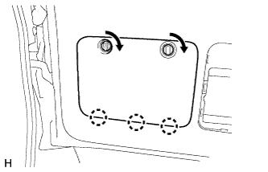
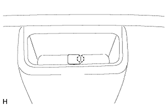
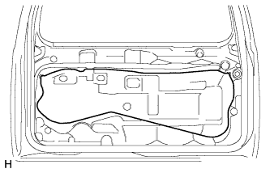

ТЕЛЕКАМЕРА (задняя) (для моделей без кронштейна запасного колеса) > СНЯТИЕ |
| 1. СНИМИТЕ ЦЕНТРАЛЬНУЮ ОБЛИЦОВКУ ДВЕРИ БАГАЖНОГО ОТДЕЛЕНИЯ |
 |
Освободите 4 фиксатора и снимите центральную облицовку двери багажного отделения.
| 2. СНИМИТЕ ЛЕВУЮ БОКОВУЮ ОБЛИЦОВКУ ДВЕРИ БАГАЖНОГО ОТДЕЛЕНИЯ |
 |
Освободите 2 фиксатора и захват и снимите боковую облицовку двери багажного отделения.
| 3. СНИМИТЕ ПРАВУЮ БОКОВУЮ ОБЛИЦОВКУ ДВЕРИ БАГАЖНОГО ОТДЕЛЕНИЯ |
 |
Освободите 2 фиксатора и захват и снимите боковую облицовку двери багажного отделения.
| 4. СНИМИТЕ ОБЛИЦОВОЧНУЮ НАКЛАДКУ ДВЕРИ БАГАЖНОГО ОТДЕЛЕНИЯ |
 |
Снимите облицовочную накладку двери багажного отделения, как показано на рисунке.
| 5. СНИМИТЕ ВЕРХНЮЮ ПАНЕЛЬ ЯЩИКА ДЛЯ ИНСТРУМЕНТОВ В СБОРЕ |
|  |
Снимите верхнюю панель ящика для инструментов в сборе, как показано на рисунке.
| 6. СНИМИТЕ ЯЩИК ДЛЯ ИНСТРУМЕНТОВ |
 |
Освободите 2 захвата и снимите ящик для инструментов.
| 7. СНИМИТЕ КРЫШКУ ЗАМКА ДВЕРИ БАГАЖНОГО ОТДЕЛЕНИЯ |
 |
С помощью съемника молдингов B открепите фиксатор и 6 захватов, и снимите крышку замка двери багажного отделения.
| 8. СНИМИТЕ ПАНЕЛЬ ОБЛИЦОВКИ ДВЕРИ БАГАЖНОГО ОТДЕЛЕНИЯ В СБОРЕ |
|  |
Отцепите захват и снимите крышку.
 |
Выверните винт.
Для моделей без кронштейна запасного колеса на двери багажного отделения:
 |
Выверните болт.
Освободите 15 фиксаторов и снимите облицовочную панель двери багажного отделения.
Для моделей с кронштейном запасного колеса на двери багажного отделения:
 |
Выверните болт.
Освободите 16 фиксаторов и снимите облицовочную панель двери багажного отделения.
Для моделей с противоположно расположенными сиденьями:
 |
Выверните винт и болт.
Освободите 15 фиксаторов и снимите облицовочную панель двери багажного отделения.
| 9. СНИМИТЕ КРЫШКУ ТЕХНОЛОГИЧЕСКОГО ОТВЕРСТИЯ ДВЕРИ БАГАЖНОГО ОТДЕЛЕНИЯ |
|  |
Снимите крышку технологического отверстия.
| 10. СНИМИТЕ ЗАДНЮЮ ТЕЛЕКАМЕРУ В СБОРЕ |
 |
Отсоедините разъем.
Выверните 2 болта и снимите заднюю телекамеру.